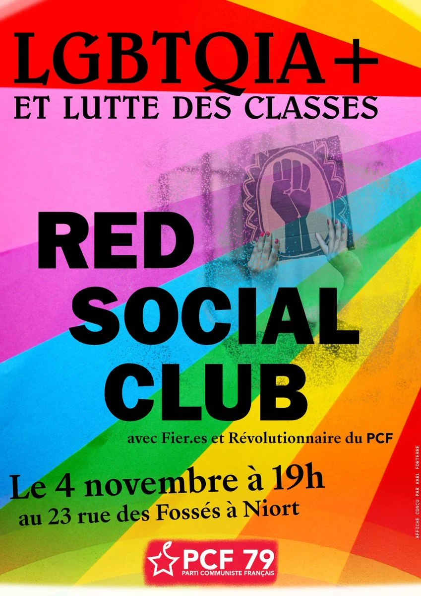

Publication sur X
Red Social Club. Égalité des droits et lutte des classes
Date de publication sur X · 24 octobre 2022
Repères éditoriaux
Nous avions rendez-vous le 4 novembre à 19 h au 23 rue des Fossés, à Niort. L’affiche annonce une soirée sur les luttes LGBTQIA+ et la lutte des classes.
Texte de la publication sur X
Vendredi 4 novembre, le prochain RED SOCIAL CLUB de genres, de luttes et bien plus dans cet espace fait par des communistes pour des communistes, mais pas que. Bienvenue! ✊ https://t.co/nNIvu0Cc9w

Sources
PCF 79 · @79Parti sur X · AR-0005-TW-1584610836911226880
À lire aussi · Bonne année 2026 de la part du PCF des Deux-Sèvres
Publications associées
- À Niort, le Red Social Club annonce une soirée sur les luttes LGBTQIA+ · Autre annonce de la même soirée